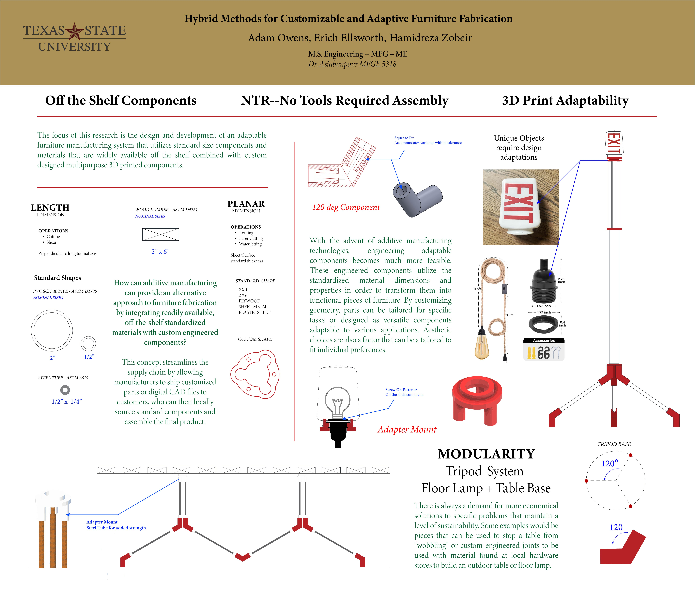
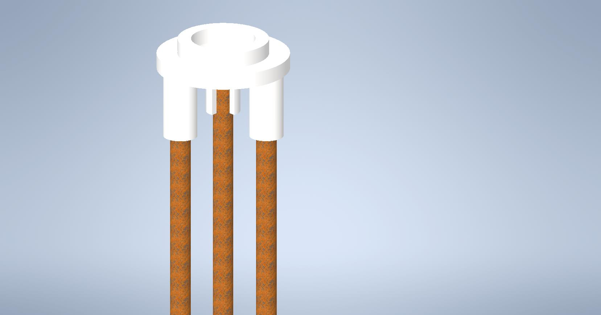
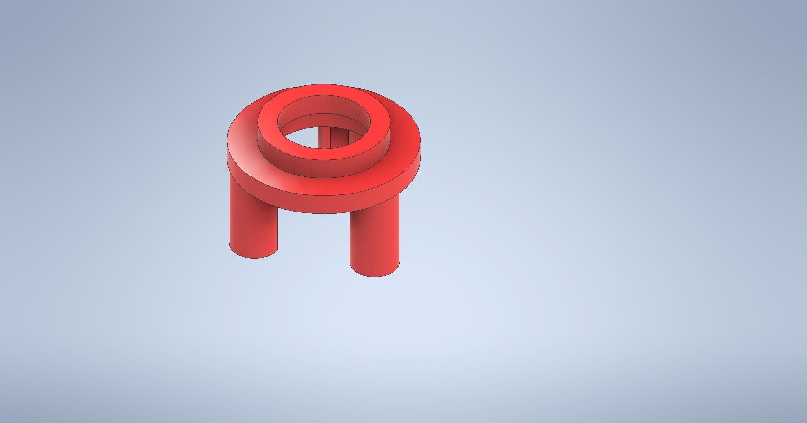
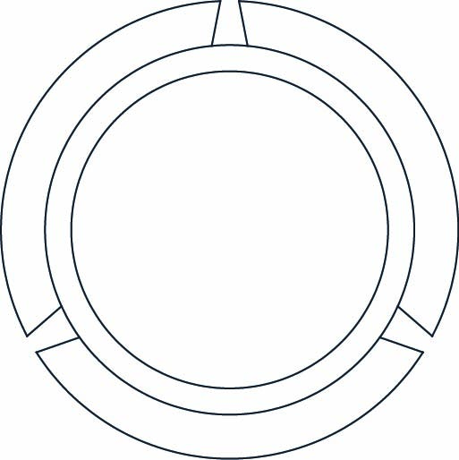
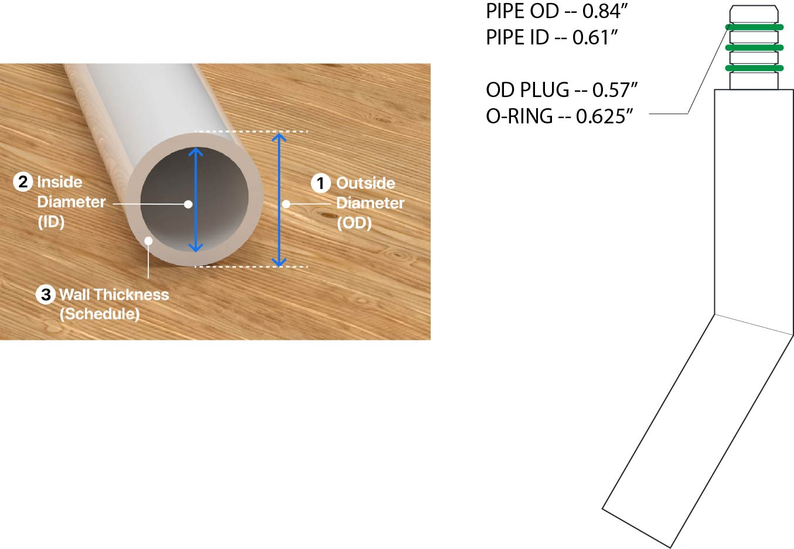
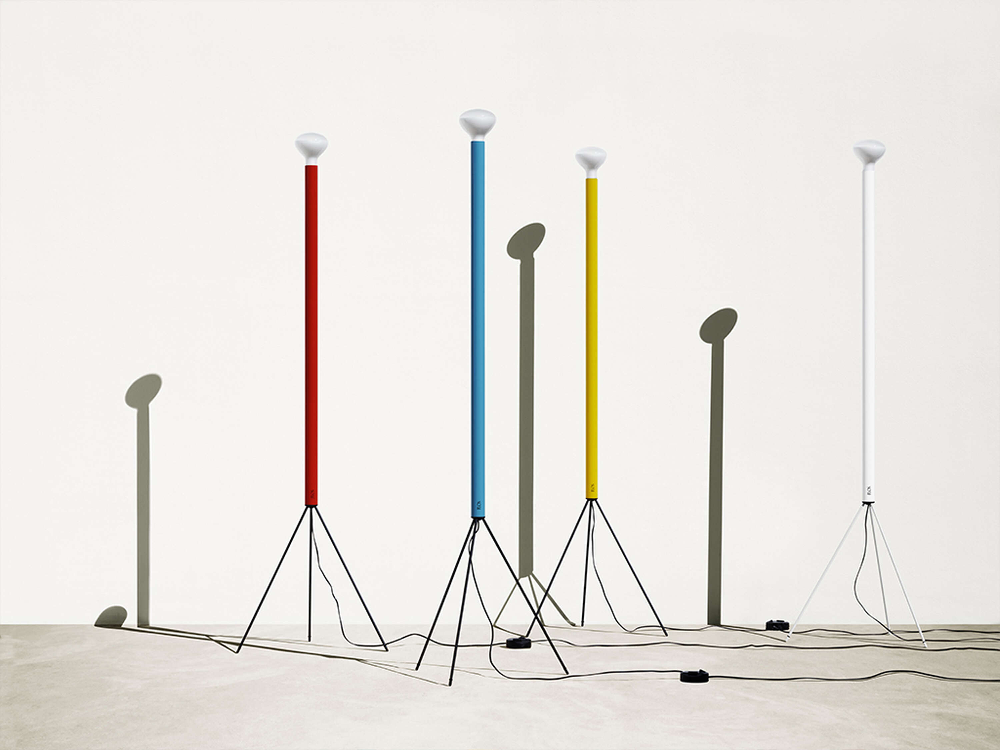

This research explores modular fabrication systems that combine standardized commercial materials with custom digitally manufactured components. Rather than designing isolated products, the project develops a reusable construction language built from off-the-shelf structural elements and engineered printed parts. The result is an adaptable framework capable of producing furniture, fixtures, and future structural systems through computational design and digital fabrication.
The project rethinks furniture as a modular system instead of a fixed object. Standardized materials remain constant while custom printed components provide adaptability, allowing structures to evolve without redesigning the entire assembly.

Widely available PVC tubing forms the primary structural members while custom 3D printed interfaces introduce geometry-specific functionality. The resulting hybrid system combines the economy of standardized materials with the precision and adaptability of digital manufacturing.


Every connection was modeled digitally before fabrication. Component geometry, assembly tolerances, print orientation, and modular interfaces were refined through rapid prototyping to create repeatable assemblies that integrate directly with standardized materials.


The floor lamp served as the primary proof-of-concept for the modular fabrication system. Rather than designing a single finished product, the prototype demonstrated how a small family of reusable joints could generate multiple structural configurations. Every component was designed around repeatability, dimensional accuracy, and rapid assembly.
The printed nodes function as the computational intelligence of the system. Each connection communicates its own method of assembly while maintaining tight tolerances with standardized PVC tubing. Instead of permanent joints, the system emphasizes repeatable assembly, disassembly, repair, and future adaptation.
Every component begins as a parametric CAD model before moving into additive manufacturing. Print orientation, layer height, tolerances, and support strategy were refined through repeated iterations to improve strength, surface finish, and assembly performance while minimizing material waste.
Prototype testing demonstrated reliable press-fit engagement, repeatable assembly, and structural stability while supporting representative loading. The modular strategy allows individual parts to be replaced or reused without discarding the complete structure, supporting an adaptable and repairable design philosophy.
The long-term objective extends beyond furniture. This project establishes a general fabrication framework where standardized structural members are paired with computationally designed components to rapidly produce adaptable physical systems. The same design principles can be applied to furniture, temporary structures, exhibition systems, deployable shelters, research apparatus, and future responsive structures.
Current work focuses on expanding the system through improved structural analysis, alternative materials, and computational optimization. Future iterations will investigate aluminum tubing, composite members, bamboo, lightweight alloys, robotic fabrication, and digitally generated connection families capable of supporting increasingly complex assemblies.